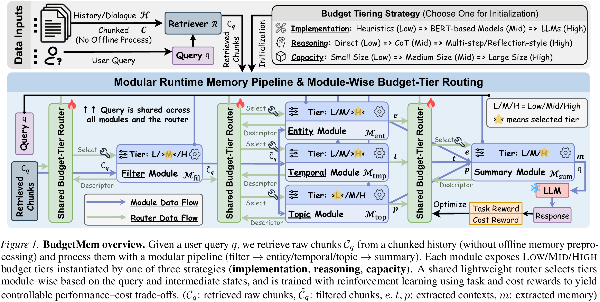
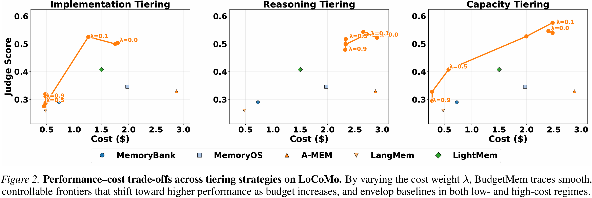
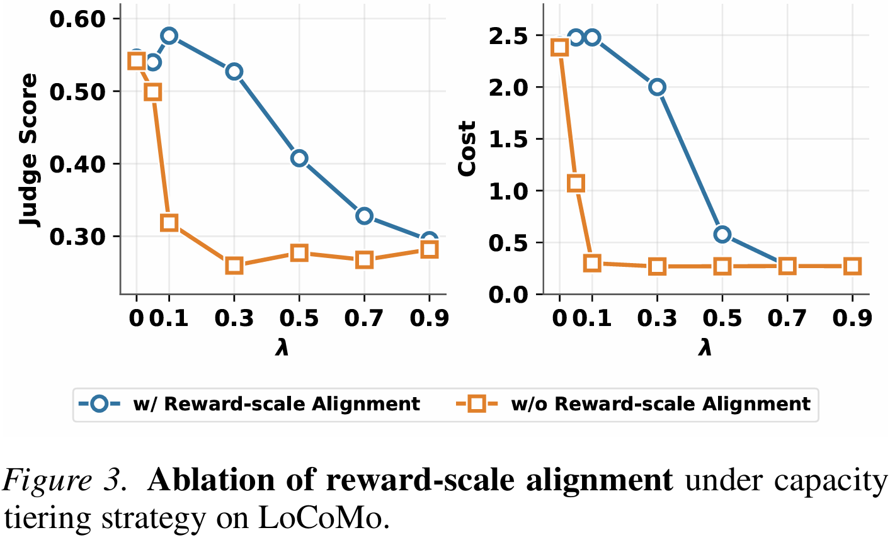
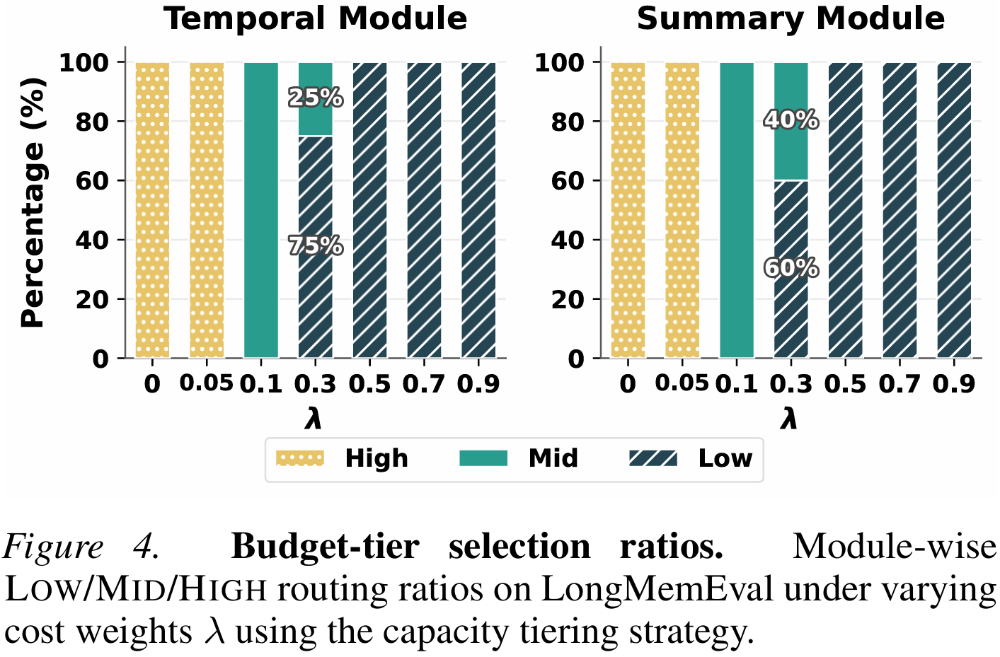
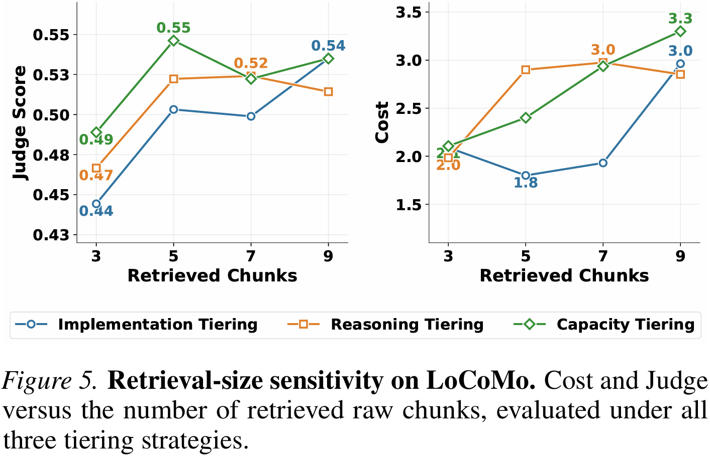

Query-aware extraction
Retrieve relevant raw history and build memory when a query arrives. Keep computation focused on the evidence that matters.
Learning Query-Aware Budget-Tier Routing for Runtime Agent Memory
The right memory. The right amount of compute.
A learned router that makes agent memory adapt to the query—and to the budget.
Illustrative allocations. Actual tiers depend on the query.
Balanced example: Filter Mid, Entity High, Temporal Mid, Topic Low, Summary High.
* Equal contribution
01 THE IDEA
Agent memory should work for the question being asked. BudgetMem extracts memory at runtime, using the current query to decide what matters and how much computation to spend.
A modular pipeline exposes Low, Mid, and High budget tiers. A lightweight router learns to choose a tier for each module, balancing answer quality with extraction cost through reinforcement learning.
Read the abstractRetrieve relevant raw history and build memory when a query arrives. Keep computation focused on the evidence that matters.
Give every stage its own compute budget, with three tiers and a consistent interface across the memory pipeline.
Use the query and intermediate states to allocate compute, guided by a reward that accounts for both quality and cost.
A small router.
A more flexible memory.
02 THE FRAMEWORK
From raw history to a useful memory: retrieve, filter, extract entity, temporal, and topic context, then summarize. The router decides how each stage runs.

The same tier interface. Three complementary axes of control.
Change the method behind each module.
Broad budget coverage, with rapid quality gains at moderate cost.
Change how much the model reasons.
Fine-grained quality control within a more concentrated cost range.
Change the size of the model in use.
A wide compute range, extending quality as the budget grows.
03 THE EVIDENCE
Evaluated on three benchmarks with two model backbones. Explore the performance-first results, with answer quality and cost side by side.
LLaMA-3.3-70B-Instruct · performance-first setting
BudgetMem variantsStrongest baseline by Judge
| Method | F1 ↑ | Judge ↑ | Cost (USD) ↓ |
|---|---|---|---|
| ReadAgent | 20.75 | 27.72 | 13.68 |
| MemoryBank | 26.74 | 32.67 | 3.94 |
| A-MEM | 21.74 | 33.17 | 80.02 |
| LangMem | 12.00 | 17.00 | 16.60 |
| Mem0 | 27.70 | 42.08 | 13.57 |
| MemoryOS | 12.97 | 33.50 | 38.83 |
| LightMem | 26.74 | 48.51 | 5.28 |
| BudgetMem–IMP | 37.47 | 56.00 | 0.71 |
| BudgetMem–REA | 40.53 | 58.00 | 0.67 |
| BudgetMem–CAP | 40.24 | 60.50 | 0.80 |
Source: Table 1 in the paper (arXiv v3). F1 and Judge are reported as percentages. Cost is the paper’s reported token-based cost for the evaluated split. Qwen results evaluate transfer of the router without retraining.
04 THE TRADE-OFF
Varying the cost weight λ traces performance–cost frontiers on LoCoMo. BudgetMem provides explicit control over the compute spent on memory extraction.
Implementation and capacity tiering cover a broader range of budgets. Reasoning tiering offers finer quality adjustments within a narrower cost band.

05 A CLOSER LOOK
Task reward and cost reward can differ substantially in scale. Without reward-scale alignment, the router becomes overly conservative and favors the Low tier.
On LoCoMo with capacity tiering, alignment supports a more graded use of tiers and a smoother performance–cost frontier.
Balanced rewards → meaningful budget control
As the cost weight λ increases, the router shifts its selections from higher-cost tiers to cheaper ones.
The module-level selection ratios on LongMemEval make this behavior interpretable: compute allocation changes with cost pressure across the pipeline.
Higher cost pressure → more economical tiers
More retrieved chunks increase cost, but quality does not improve monotonically. Too few chunks omit useful evidence; too many introduce redundant or weakly relevant context.
In the reported LoCoMo setting, retrieving five chunks offers the best balance between cost and quality.
Relevant context matters more than volume
06 BUILD ON THIS WORK
If BudgetMem helps your research, please consider citing our paper.
@article{BudgetMem,
title = {Learning Query-Aware Budget-Tier Routing
for Runtime Agent Memory},
author = {Haozhen Zhang and Haodong Yue and
Tao Feng and Quanyu Long and Jianzhu Bao
and Bowen Jin and Weizhi Zhang and
Xiao Li and Jiaxuan You and Chengwei Qin
and Wenya Wang},
journal = {arXiv preprint arXiv:2602.06025},
year = {2026}
}